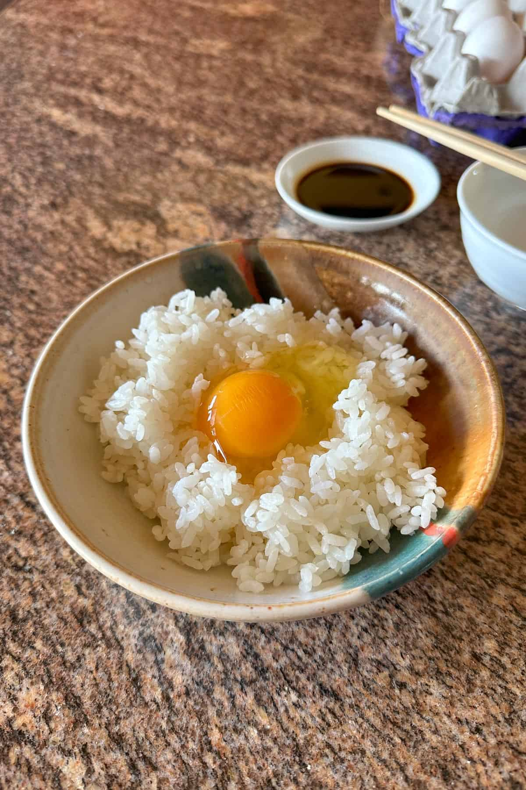

Ultimate Simple Tamago Kake Gohan (Egg on Rice)

Description
A classic and comforting Japanese breakfast dish featuring hot steamed rice topped with a fresh raw egg and a dash of savory soy sauce.
Ingredients
- Steamed white rice: 1 bowl
- Fresh raw egg: 1
- Soy sauce: 1 teaspoon
Steps
- Scoop the hot rice into a bowl.
- Make a small well in the center and crack the egg into it.
- Drizzle with soy sauce and stir vigorously until combined.
Home